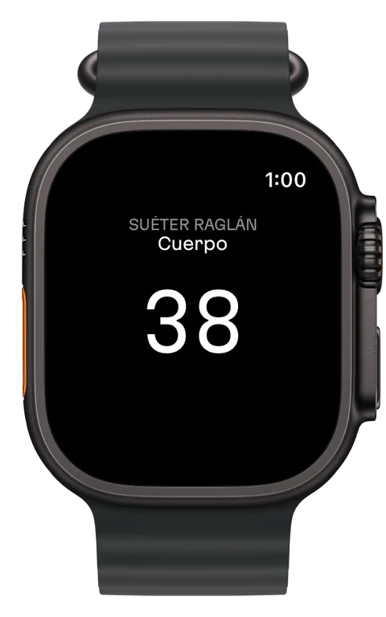
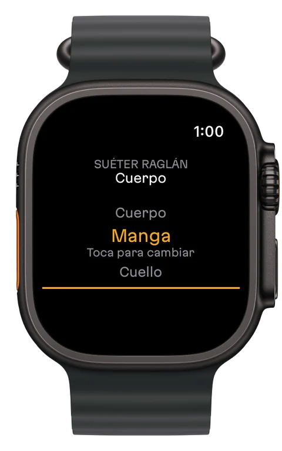
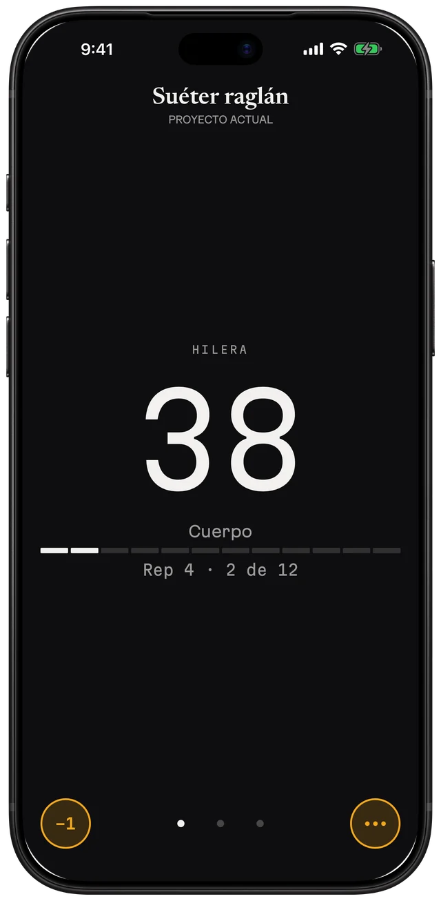
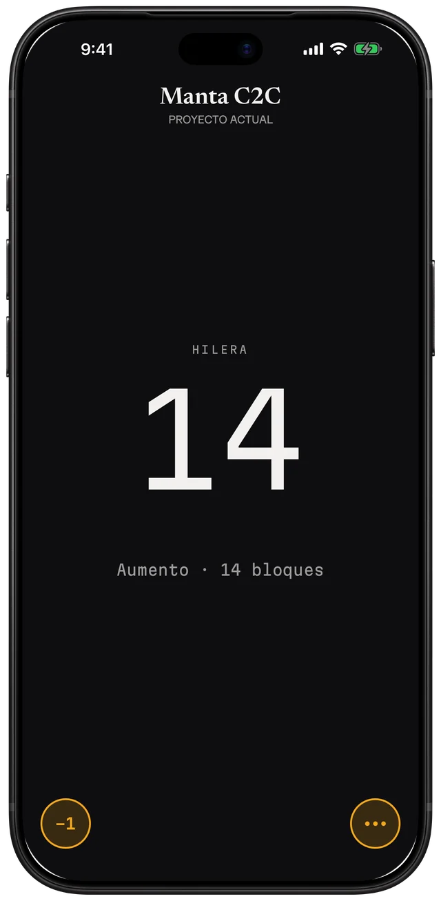
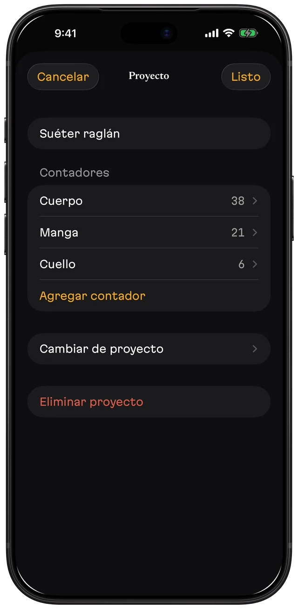

Contador de hileras · tejido y ganchillo
Cuenta hileras desde tu muñeca, con la vista en el tejido.
Picot cuenta hileras en tu Apple Watch y en tu iPhone, aunque el teléfono esté en otro cuarto.
Gratis para empezar. Picot Pro es una compra única.


Cuenta en tu muñeca
- Toca en cualquier parte del reloj para sumar una hilera.
- Mantén presionado hasta que se cierre el anillo para restar una.
- Gira la corona para elegir contador y toca para confirmar.
- Agrega Picot a la carátula del reloj: un toque lo abre, y el espacio grande muestra tu hilera actual.
- El reloj cuenta solo, aunque el iPhone esté lejos o apagado. Cuando vuelven a estar cerca se ponen al día solos y se suman todos los toques.

Para quien teje en serio, con agujas o ganchillo



- Un número grande que se lee de un vistazo.
- Tu patrón, justo encima de tu cuenta (Pro). Adjunta el PDF, arrastra la línea hasta la hilera en la que vas y toca para contar sin salir de la página.
- Avisos por hilera (Pro). Pon una nota en cualquier hilera, como "disminuye" o "cambia de color", y Picot te la muestra al llegar. Si cuentas en el reloj, te avisa en la muñeca.
- Un contador para cada pieza (Pro). Cuerpo, mangas, cuello.
- Contador de repetición (Pro). Lo fijas cada N hileras y Picot te dice en qué repetición vas y en qué hilera de ella.
- Esquina a esquina (Pro). Picot te dice cuándo aumentar o disminuir y cuántos bloques lleva la hilera. Planea tu pieza C2C con la calculadora gratis.
Picot hace una sola cosa
Casi todas las apps de tejido son suites: patrones, inventario de estambre, comunidad y, en algún lugar, un contador. Picot es solo el contador, hecho para no perder la cuenta.
Lo que Picot es
- Un contador de hileras para iPhone y Apple Watch
- Cada toque se guarda al instante
- Los proyectos y contadores eliminados se guardan 30 días en la papelera
- Respaldos que guardas en Archivos, iCloud Drive o por correo
- Exportación de tus proyectos y cuentas de hileras a un archivo
Lo que Picot no es
- Una biblioteca de patrones ni un inventario de estambre
- Una red social
- Una cuenta en la que tengas que iniciar sesión
- Una suscripción
- Una app con anuncios
Gratis y Pro
| Función | Gratis | Picot Pro |
|---|---|---|
| App del Apple Watch y complicación en la carátula | Sí | Sí |
| Proyectos | 1 | Ilimitados |
| Contadores por proyecto | 1 | Ilimitados |
| Contadores de repetición y esquina a esquina | — | Sí |
| Patrón en PDF encima de tu cuenta | — | Sí |
| Avisos por hilera | — | Sí |
| Respaldo, restauración, papelera y exportación | Sí | Sí |
| Precio | Gratis | Compra única. En México, $249 MXN; el precio varía por país. |
Picot Pro se puede compartir con tu familia con Compartir en familia.
Preguntas
¿El Apple Watch necesita el iPhone cerca?
No. El reloj cuenta solo, aunque el iPhone esté lejos o apagado. Cuando vuelven a estar cerca se ponen al día solos y se suman todos los toques.
¿Picot es una suscripción?
No. Picot es gratis para empezar con un proyecto y un contador, Apple Watch incluido. Picot Pro es una compra única. No hay anuncios ni cuenta.
¿Necesito un Apple Watch?
No. Picot funciona igual solo con el iPhone. El reloj agrega la cuenta desde tu muñeca.
¿Sirve para tejer con agujas o con ganchillo?
Para los dos. Picot cuenta hileras con agujas y con ganchillo, e incluye contadores de repetición y esquina a esquina en Picot Pro.
¿Puedo respaldar mis proyectos?
Sí. Guarda un respaldo en Archivos, iCloud Drive o por correo y restáuralo en cualquier iPhone. Restaurar nunca borra lo que ya tienes. Los patrones en PDF se quedan en el iPhone donde los agregaste.
¿Picot recopila mis datos?
No. Picot no tiene cuenta ni inicio de sesión, y no recopila datos.